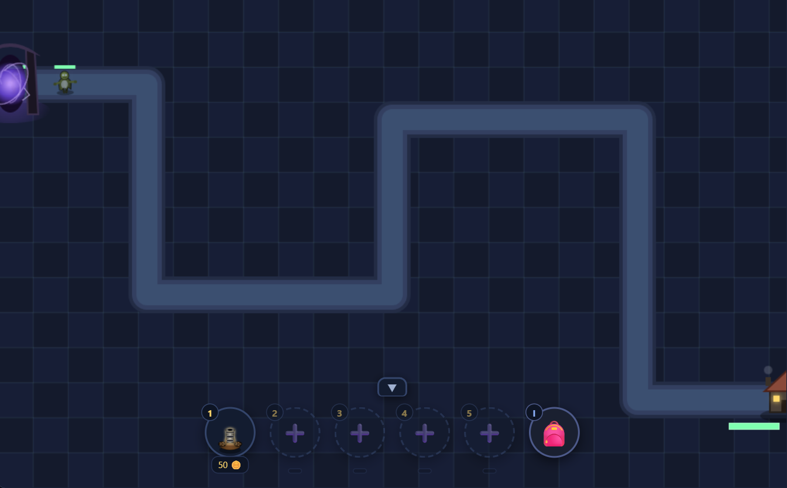
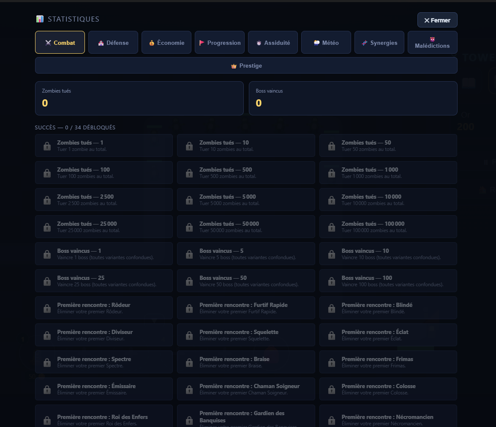

Les zombies arrivent par la route et tu dois les arrêter avant qu'ils atteignent ta base. Tu poses des tours sur les côtés, tu gagnes de l'or à chaque zombie tué et tu le dépenses en nouvelles tours ou en améliorations (trois niveaux par tour). Chaque zombie qui passe te coûte des vies : 20 sur la carte facile, 3 sur les cartes extrêmes. Il n'y a pas de dernière vague, elles deviennent juste plus dures.
Dix tours. Neuf se débloquent au fil des vagues (Canon, Archer, Glace, Feu, Vent, Tesla, Poison, Caserne Militaire, Glu), la dixième, la Tour du Prestige, avec le Prestige. L'Archer perce toute une file d'ennemis, la Tesla enchaîne jusqu'à trois cibles, la Caserne envoie une jeep, un camion ou un tank selon son niveau. La barre de raccourcis n'a que cinq emplacements : il faut choisir. Les tours peuvent aussi se combiner, avec cinq synergies cachées. Par exemple, un zombie gelé qui prend un tir de Feu encaisse des dégâts en plus et perd son gel.
| Tour | Débloquée | Rôle |
|---|---|---|
| Canon | Vague 1 | Tir sur une seule cible, sans faiblesse particulière. |
| Archer | Vague 5 | Flèche perçante qui touche tous les ennemis alignés, avec plus de dégâts en bout de ligne. |
| Glace | Vague 10 | Ralentit sa cible. +50 % de dégâts sur les zombies de feu, −50 % sur ceux de glace. |
| Feu | Vague 20 | Brûlure continue. +50 % de dégâts sur les zombies de glace, −50 % sur ceux de feu. |
| Vent | Vague 30 | Lames de vent en cône qui font saigner les ennemis touchés. |
| Tesla | Vague 45 | Éclair qui enchaîne jusqu'à 3 ennemis et les immobilise un court instant. |
| Poison | Vague 60 | Boule toxique qui explose en nuage et empoisonne tous les ennemis du cercle. |
| Caserne Militaire | Vague 70 | Toutes les 30 s, un véhicule (jeep, camion, tank) parcourt la route en percutant les zombies. |
| Glu | Vague 80 | Englue et ralentit sa cible. Au niveau 3, la boule éclate en flaque et ralentit tout le groupe. |
| Tour du Prestige | Prestige 1 | Un seul exemplaire à la fois. Elle saute d'un endroit à l'autre ou reste fixe, et frappe en zone. |
Dès la vague 15, certaines vagues sont maudites (Horde, Essaim, Vitesse Démoniaque, Enragés, Blindage Maudit) et changent les règles de la vague en cours. Un mini-boss arrive aux vagues 5, 15, 25…, un boss aux vagues 10, 20, 30… (cinq boss différents, tirés à la roulette). À partir de la vague 30, la météo peut s'en mêler pendant environ une minute et demie : Neige, Canicule, Éclipse, Tempête de sable, Aurore Boréale, Pluie de Météores, ou Bonheur, qui double l'or lâché par les ennemis.
Quand tu atteins la vague 200, tu peux passer Prestige. La partie repart de zéro (vague, or, tours), mais ton profil, tes stats et tes succès restent, et chaque niveau ajoute 50 % d'or par zombie tué et 100 d'or de départ. Prestige 1 débloque aussi la Tour du Prestige, la vitesse x3 et une sixième carte, la Spirale du Prestige (quatre portails, 3 vies). Prestige 2 ajoute une compétence passive qui annule une défaite par partie, avec un temps de recharge.

